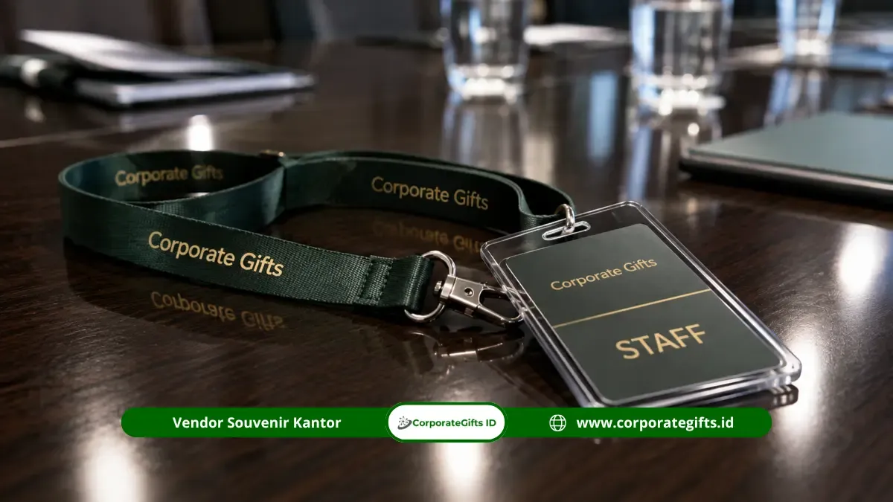

Corporate Gifts ID - Ide souvenir kantor sektor pendidikan dan yayasan terbaik saat ini mencakup paket leather notebook, smart digital tumbler, dan lanyard ID card dengan kisaran harga Rp50.000 hingga Rp250.000 per paket. Estimasi waktu produksi untuk pesanan massal institusi umumnya berkisar 7 hingga 14 hari kerja tergantung kompleksitas kustomisasi.
Ketiga kategori produk ini dipilih karena mampu merepresentasikan nilai akademik dan kredibilitas yayasan secara profesional di setiap kesempatan resmi lembaga.
Poin Kunci Souvenir Kantor Pendidikan & Yayasan:
- Tiga Kategori Utama: Leather notebook set, smart digital tumbler suhu, dan lanyard ID card custom cetak sublimasi.
- Kisaran Anggaran Realistis: Rp50.000 hingga Rp250.000 per paket tergantung spesifikasi material dan kuantitas pesanan.
- Lead Time Produksi: Standar 7-14 hari kerja untuk pemesanan massal setelah sampel mockup disetujui.
- Dampak Citra Kelembagaan: Pemilihan merchandise fungsional membentuk persepsi positif di mata tenaga pendidik, wali murid, asesor akreditasi, dan mitra donatur.
- Dukungan Terpadu: CorporateGifts.ID melayani proses konsultasi, desain grafir logo, hingga ekspedisi aman ke seluruh Indonesia.
Memilih souvenir kantor yang tepat untuk sektor pendidikan dan yayasan bukan perkara sederhana. Berbeda dengan perusahaan komersial yang lebih leluasa bereksperimen dengan gaya merchandise yang playful, institusi pendidikan cenderung membutuhkan pendekatan yang lebih formal, edukatif, dan mencerminkan nilai-nilai akademik luhur.
Panduan ini membahas secara menyeluruh kriteria, spesifikasi harga, hingga alasan mengapa pemilihan merchandise yang tepat berdampak signifikan terhadap citra kelembagaan sebuah yayasan maupun sekolah.
Mengapa Institusi Pendidikan Membutuhkan Merchandise Representatif?
Merchandise yang representatif membantu institusi pendidikan menampilkan citra profesional yang konsisten di setiap interaksi dengan staf, mahasiswa, maupun tamu eksternal. Sekolah, kampus, dan yayasan pada dasarnya adalah organisasi yang mengandalkan kepercayaan publik, sehingga setiap detail termasuk cinderamata kantor turut membentuk persepsi kualitas tata kelola institusi tersebut.
Sebuah studi dari PPAI Research mencatat bahwa merchandise korporat yang dirancang dengan baik dapat meningkatkan recall merek penerimanya secara signifikan dibandingkan media promosi konvensional.
Bagi yayasan pendidikan, souvenir kantor bukan sekadar formalitas seremonial. Barang-barang ini sering digunakan dalam agenda wisuda, kunjungan akreditasi, rapat tahunan yayasan, penandatanganan MoU kemitraan strategis, hingga penyambutan donatur baru.
Ketika sebuah lembaga mampu menghadirkan merchandise yang fungsional sekaligus elegan, hal ini secara tidak langsung menegaskan bahwa institusi tersebut serius dalam mengelola setiap aspek operasionalnya, termasuk hal-hal yang tampak kecil seperti pemilihan alat tulis kerja harian atau wadah minum higienis.
Selain itu, merchandise yang konsisten dengan identitas visual yayasan mulai dari logo resmi, palet warna almamater, hingga tipografi memperkuat citra institusional di setiap titik kontak. Guru, dosen, staf administrasi, hingga tamu undangan yang menerima souvenir berkualitas cenderung mengasosiasikan pengalaman positif tersebut dengan reputasi lembaga secara menyeluruh.
Konsistensi ini juga penting dalam konteks akreditasi maupun audit kelembagaan, di mana asesor eksternal sering memperhatikan detail-detail kecil sebagai indikator tata kelola institusi yang tertib. Souvenir yang tertata rapi dan diberikan pada momen yang tepat menjadi sarana elegan untuk menunjukkan bahwa yayasan menjalankan operasionalnya dengan standar profesional tinggi.
Jenis Institusi Pendidikan yang Membutuhkan Souvenir Kantor Berkualitas
Kebutuhan souvenir kantor sektor pendidikan tidak terbatas pada satu entitas saja, melainkan mencakup beragam klaster kelembagaan:
1. Sekolah Dasar hingga Menengah (SD, SMP, SMA/SMK)
Sekolah dasar hingga menengah umumnya memerlukan merchandise untuk acara pelepasan kelulusan, penyambutan wali murid baru, seminar parenting, dan bentuk apresiasi tahunan kepada dewan guru berprestasi.
2. Perguruan Tinggi, Institut, dan Universitas
Perguruan tinggi memiliki kebutuhan yang lebih kompleks dan berskala luas, mulai dari souvenir untuk dosen pembimbing, paket seminar kit simposium ilmiah, hingga cinderamata eksklusif bagi pemateri tamu kehormatan dan mitra riset industri.
3. Yayasan Sosial & Lembaga Pengelola Beasiswa
Yayasan sosial yang bergerak di bidang pendidikan, seperti pengelola beasiswa atau yayasan sekolah non-profit, rutin membutuhkan merchandise untuk acara penggalangan dana amal, laporan tahunan donatur, serta silaturahmi dewan pembina yayasan.
4. Lembaga Bimbingan Belajar dan Pusat Pelatihan Profesi
Lembaga bimbingan belajar (bimbel) dan lembaga pelatihan vokasi sering memesan souvenir fungsional seperti tote bag kanvas dan stationery set sebagai bagian dari strategi retensi siswa dan membangun loyalitas brand jangka panjang.

Tali lanyard polyester tissue printing halus dengan holder kartu identitas staf yayasan dan tenaga pendidik.
Setiap segmen memiliki preferensi produk yang berbeda, namun semuanya mengedepankan kombinasi antara fungsi praktis harian, durabilitas material, dan ketepatan representasi identitas kelembagaan. Institusi yang memahami segmentasi audiens staf internal, tamu eksternal, dan peserta pelatihan akan lebih mudah mengalokasikan anggaran tahunan secara efisien.
Spesifikasi dan Estimasi Harga Souvenir Yayasan Pendidikan
Berikut rangkuman kisaran harga, spesifikasi material, dan estimasi waktu pengerjaan untuk kategori souvenir yang paling banyak dipesan oleh institusi pendidikan dan yayasan di Indonesia:
| Nama Item / Paket | Material & Spesifikasi | Kisaran Harga (Rp) | Minimal Order (MOQ) | Estimasi Pengerjaan |
|---|---|---|---|---|
| Paket Buku Catatan & Pena | Leather synthetic PU hardcover, isi 100 lembar bookpaper, pulpen metal grafir nama institusi | Rp50.000 - Rp85.000 | 100 pcs | 7 - 10 hari kerja |
| Smart Digital Tumbler | Stainless steel SUS304 food grade 500ml, layar sentuh LED indikator suhu, grafir laser logo | Rp65.000 - Rp120.000 | 50 pcs | 7 - 14 hari kerja |
| Executive Gift Set Box | Hardbox magnetik beludru custom, isi tumbler premium, agenda kulit eksklusif, dan pen rollerball metal | Rp150.000 - Rp250.000 | 50 pcs | 10 - 14 hari kerja |
*Catatan: Harga di atas bersifat indikatif dan dapat disesuaikan menurut volume pesanan, teknik cetak (grafir laser, print UV, atau deboss hotprint), serta kustomisasi kemasan khusus. Untuk estimasi resmi dapat menghubungi Layanan RFQ CorporateGifts.ID.
Kriteria Barang Promosi Ideal untuk Lingkungan Akademik
Tidak semua merchandise korporat cocok diaplikasikan di lingkungan pendidikan. Terdapat tiga kriteria mendasar yang wajib dipenuhi:
1. Fungsional dan Menunjang Aktivitas Kerja Harian
Cinderamata yang baik harus memiliki nilai guna praktis dalam aktivitas harian staf pengajar maupun tamu institusi. Buku catatan agenda, tumbler higienis, dan flashdisk kartu data dipilih karena terpakai nyata dalam rutinitas kerja akademik mencatat materi rapat koordinasi, menghadiri simposium, atau menyimpan dokumen kurikulum.
2. Kualitas Material yang Tahan Lama
Material produk langsung mencerminkan standar integritas institusi. Bahan kulit sintetis PU berkualitas tinggi, stainless steel tahan karat food grade, serta kotak hardbox kokoh menjadi pilihan utama karena daya tahannya yang panjang. Semakin lama produk digunakan, semakin panjang pula masa eksposur nama yayasan di lingkungan profesional.
3. Kustomisasi Presisi Sesuai Identitas Visual Lembaga
Setiap yayasan dan institusi pendidikan memiliki pedoman identitas visual tersendiri lambang yayasan, warna kebesaran almamater, dan moto akademik. Kustomisasi yang presisi melalui grafir laser komputer, deboss elegan, atau sablon rapi membuat merchandise terasa berkelas dan dirancang khusus secara eksklusif.
Solusi Kebutuhan Souvenir Institusi Bersama Corporate Gifts
CorporateGifts.ID siap memenuhi pengadaan souvenir kantor sektor pendidikan dan yayasan Anda dengan sistem kerja profesional, seleksi material teruji, dan sistem pengiriman berasuransi ke seluruh pelosok nusantara.
Tim spesialis kami siap membantu pengadaan merchandise dari skala puluhan paket VIP dewan pembina hingga ribuan paket perlengkapan orientasi dan seminar akademik. Anda dapat meninjau koleksi produk lengkap pada E-Katalog Resmi 2026 kami.